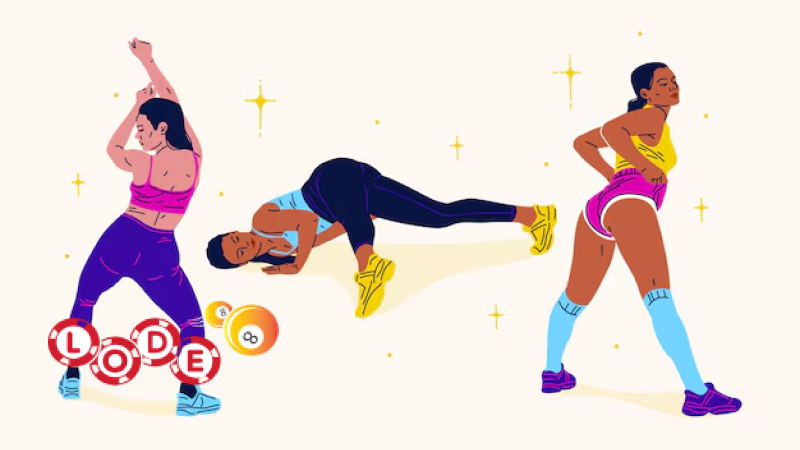

Mơ thấy mình ở truồng là một giấc mơ phổ biến và có thể mang nhiều ý nghĩa khác nhau. Trong văn hóa dân gian, giấc mơ này thường được cho là điềm báo cho những điều xui xẻo hoặc may mắn sắp xảy ra trong tương lai. Tuy nhiên, trong số đề, giải mã giấc mơ này lại hoàn toàn khác.
Theo lối giải mã số đề, mơ thấy ở truồng tượng trưng cho việc bạn sắp có một sự kiện quan trọng xảy ra trong cuộc sống. Sự kiện này có thể là cơ hội mới, thử thách hoặc thay đổi bất ngờ. Do đó, nhiều người chơi số đề tin rằng đây là lời nhắc nhở từ "cõi trên" để họ thử vận may của mình.
Mơ thấy ở truồng đánh số mấy? Giải mã giấc mơ thấy ở truồng
Nếu chỉ nằm mơ thấy ở truồng chung chung thì anh em nên đánh số 83
Mơ thấy mình ở truồng có thể biểu thị rằng bạn cảm thấy không được bảo vệ hoặc dễ bị tổn thương trong cuộc sống thực. Điều này có thể liên quan đến một tình huống mà bạn cảm thấy mất kiểm soát hoặc không an toàn.
Nếu giấc mơ cụ thể hơn thì anh em tham khảo chi tiết dưới đây:
Mơ thấy ở người yêu truồng đánh số 14
Mơ thấy ở người yêu truồng mang ý nghĩa rằng trong tương lai, bạn có thể bị người yêu phản bội, họ sẽ đi theo người khác và bỏ rơi bạn. Hãy cố gắng nỗ lực để vượt qua.
Mơ thấy đồng nghiệp ở truồng đánh số 92
Mơ thấy đồng nghiệp ở truồng mang ý nghĩa đồng nghiệp đang coi thường và khinh rẻ bạn.
Mơ thấy sếp ở truồng đánh số 99
Mơ thấy sếp ở truồng báo hiệu rằng tương lai bạn sẽ được sếp tăng lương, thăng chức.
Mơ thấy người thân trong gia đình ở truồng đánh số 64-43
Mơ thấy người thân trong gia đình ở truồng có nghĩa là trong tương lai gia đình bạn sẽ gặp họa, cần cẩn thận để tránh mắc bẫy kẻ gian.
Mơ thấy rất nhiều người ở truồng đánh số 03-34
Mơ thấy rất nhiều người ở truồng ám chỉ rằng tương lai bạn sẽ phải đưa ra nhiều lựa chọn. Những quyết định này sẽ mang lại may rủi khác nhau tùy thuộc vào sự lựa chọn của bạn.

Mơ thấy ở truồng bị công an bắt nhắc nhở đánh số 24-44
Mơ thấy ở truồng bị công an bắt nhắc nhở bạn nên cẩn thận khi tham gia giao thông, không vượt đèn đỏ và đi đúng làn đường.
Mơ thấy ở truồng khi đang được mát-xa đánh số 45
Mơ thấy ở truồng khi đang được mát-xa báo hiệu rằng tương lai bạn sẽ được hưởng thụ cuộc sống, không phải lo nghĩ nhiều.
Mơ thấy mình ở truồng trước mặt bạn bè đánh số 65-59
Mơ thấy mình ở truồng trước mặt bạn bè mang ý nghĩa bạn cảm thấy xấu hổ hoặc lo lắng về việc bị phơi bày điểm yếu hoặc bí mật của mình trước bạn bè.
Mơ thấy ở truồng trong lớp học đánh số 27-72
Mơ thấy ở truồng trong lớp học cho thấy bạn đang lo lắng về kiến thức hoặc khả năng của mình, sợ rằng không đủ tự tin để đối diện với thách thức trong học tập hoặc công việc.
Mơ thấy ở truồng trên sân khấu đánh số 72-68
Mơ thấy ở truồng trên sân khấu biểu thị bạn đang lo lắng về việc bị phê phán hoặc đánh giá trong tình huống công khai, có thể là trong công việc hoặc cuộc sống xã hội.
Mơ thấy mình ở truồng trong siêu thị đánh số 02-58
Mơ thấy mình ở truồng trong siêu thị ám chỉ bạn cảm thấy bị theo dõi hoặc đánh giá bởi người khác trong cuộc sống hàng ngày, có thể bạn đang chịu áp lực từ môi trường xung quanh.
Mơ thấy mình ở truồng nhưng không ai chú ý đánh số 92
Mơ thấy mình ở truồng nhưng không ai chú ý cho thấy bạn có thể đang lo lắng không cần thiết, có những nỗi sợ vô lý về việc bị phán xét hoặc chú ý quá mức.
Mơ thấy mình ở truồng trong nhà vệ sinh công cộng đánh số 95
Mơ thấy mình ở truồng trong nhà vệ sinh công cộng mang ý nghĩa bạn cảm thấy bất an và không có sự riêng tư, có thể liên quan đến việc bạn cảm thấy cuộc sống cá nhân bị xâm phạm.
Mơ thấy ở truồng chạy trốn đánh số 04-85
Mơ thấy ở truồng chạy trốn biểu thị bạn đang cố gắng thoát khỏi một tình huống khó khăn hoặc một nỗi sợ hãi nào đó trong cuộc sống thực.
Mơ thấy mình ở truồng trong một đám cưới đánh số 82-48
Mơ thấy mình ở truồng trong một đám cưới cho thấy bạn cảm thấy không phù hợp hoặc lo lắng về một cam kết hoặc trách nhiệm lớn trong cuộc sống.
Những con số may mắn khi mơ thấy ở truồng
- Mơ thấy con gái ở truồng: 42 - 78
- Mơ thấy người khác ở truồng: 43 - 51
- Mơ thấy bản thân mình ở truồng: 31 - 93
- Mơ thấy đàn ông ở truồng: 46 - 64
- Mơ thấy mình ở truồng chạy ngoài đường: 56 - 95
- Mơ thấy mình ở truồng bị người ta cười: 26 - 36
- Mơ thấy ở truồng bị đuổi đánh: 10 - 38
Bài viết trên là những ý nghĩa khi mơ thấy ở truồng trong nhiều tình huống cụ thể. Hy vọng bài viết sẽ mang đến cho bạn cái nhìn tổng quan và ý nghĩa rõ ràng hơn về những giấc mơ liên quan đến việc thấy mình hoặc người khác ở truồng. Chúc anh em may mắn và trúng giải lớn khi chơi lô đề online.
![time]()